Lucia
Lucia 于 2014 年秋天加入北航 Toastmasters。10 月 31 日万圣节主题的第 76 次例会上，她带来破冰演讲 CC1《Love is Troublesome》，用一段对"爱情其实很麻烦"的另类思考完成首秀，给俱乐部留下了独特的第一印象。
此后她的成长几乎从未停步。12 月连续两周担任即兴主持（Table Topic Master），被会议预告形容为"smart and pretty Lucia"；同月又登台完成 CC2《You Are Never Really Ready》，主张"我们永远没有真正准备好的那一刻，行动才是答案"。进入 2015 年，她一路推进项目：CC3 分享雅思备考中的 paraphrase 技巧，CC4《Don't Major in the Minor》提醒大家别在小事上耗费根本，CC5《To keep a spiritual diary》倡导在快节奏生活里向内观照，CC6 则回到沟通本身，讲《Tips on How to be a Successful Communicator》——"良言一句三冬暖"。短短半年多，她完成了 CC1 到 CC6 的扎实跨越。
她也是俱乐部公认的台上高手。第 85 次例会的预告里，大家直接称她为"我们的大腿"，说她站在台上时"自信、沉稳、幽默，还是一台学习机器"。她多次担任会议主席（Toastmaster），主持过以"Wine""Winter Holiday"为主题的例会；在 2015 年春季比赛中作为英文演讲选手出战，把对舞台的热爱付诸实战。
无论是即兴主持的从容、备稿演讲的真诚，还是比赛中的拼劲，Lucia 都是那种用持续投入证明自己的会员——不等"准备好"，先上台再说。
完整足迹 · 13 次出现（点开，每条可跳转原文）
- 2014-10-31第76次 · 演讲 Love is Troublesome
- 2014-11-21第79次 · 担任桌话主持
- 2014-11-23第79次 · 主持Workplace Freshman桌话
- 2014-12-04第80次 · 文中亦提及作为桌话主持
- 2014-12-11第81次 · 演讲 You Are Never Really Ready
- 2014-12-22第81次 · 演讲 You Are Never Really Ready
- 2015-01-16第85次 · 备稿演讲 Paraphrase-雅思经验分享
- 2015-01-22第86次 · 担任第86次会议(Winter Holiday)Toastmaster
- 2015-03-12第87次 · 参加春季比赛英文演讲
- 2015-03-20第88次 · 做备稿演讲Don't Major in the Minor
- 2015-03-27第89次 · 担任第89次会议(Wine)Toastmaster
- 2015-04-10第91次 · 做备稿演讲To keep a spiritual diary
- 2015-05-07做备稿演讲Tips on How to be a Successful Communicator
闯关之路 · Competent Communication
做过的演讲 · 7 场
担任过的会议角色
里程碑
- 2014-10-31 入会破冰 ↗第 76 次例会带来 CC1《Love is Troublesome》，完成破冰首秀。
- 2014-12-12 首次担任会议角色后稳步进阶 ↗完成 CC2，并在此前两周连续担任即兴主持。
- 2015-01-16 被誉为'大腿' ↗第 85 次例会预告称她为俱乐部的'大腿'，自信、沉稳、幽默且是'学习机器'。
- 2015-03-13 登上比赛舞台 ↗作为英文演讲选手参加 2015 北航 TMC 春季比赛。
- 2015-05-08 完成 CC6 ↗半年多内从 CC1 一路推进到 CC6,完成扎实的成长跨越。
为俱乐部做的事
- 持续登台,半年多内完成 CC1 至 CC6 共六个备稿演讲项目,是俱乐部活跃的核心讲者。
- 两度担任会议主席(Toastmaster),主持 Winter Holiday、Wine 等主题例会。
- 两次担任即兴主持(Table Topic Master),为例会带来高质量的即兴环节。
- 代表俱乐部参加 2015 春季英文演讲比赛。
- 在台上以自信、沉稳、幽默著称,成为新会员心目中的标杆。
照片墙 · 时间线
 ✓
✓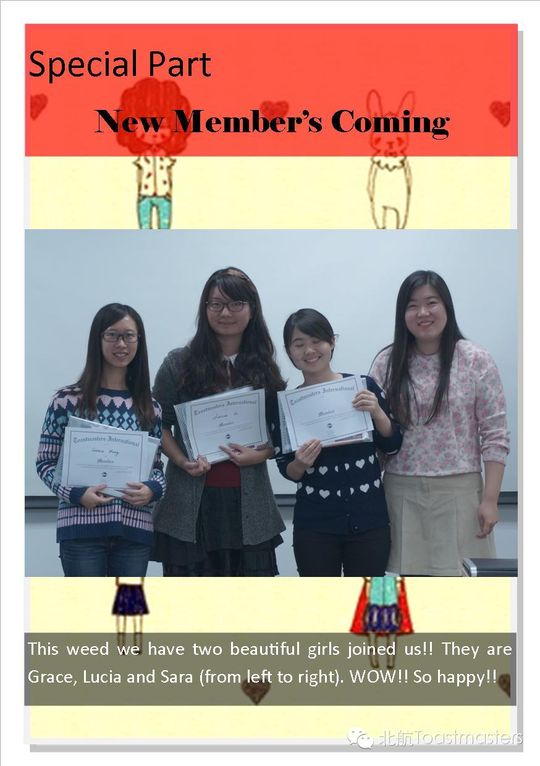
✓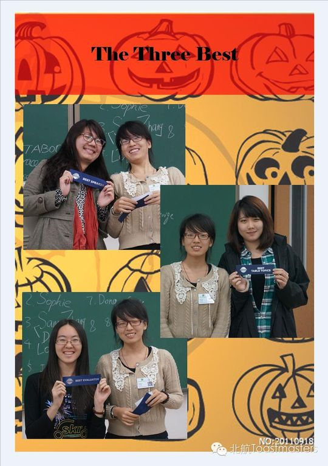
✓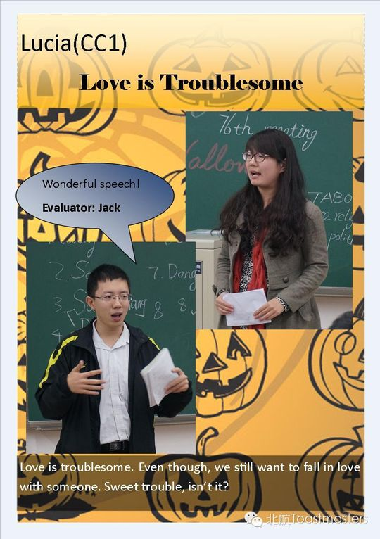
✓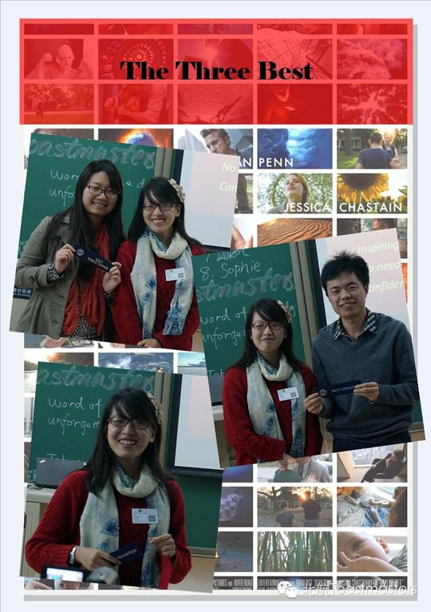
✓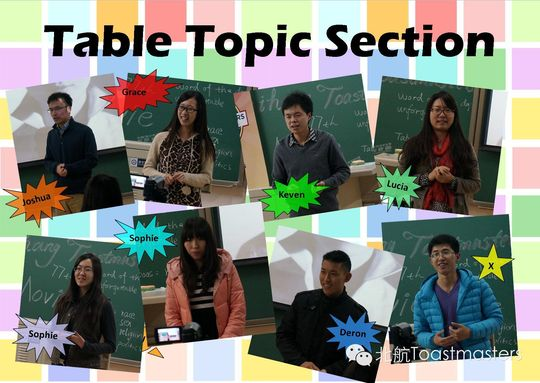
✓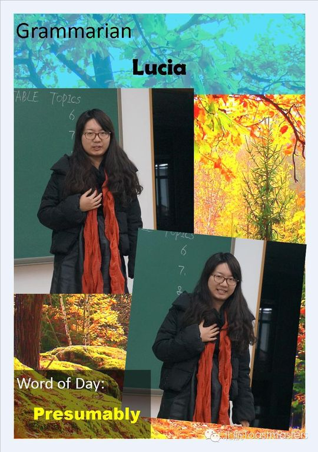
✓ ✓
✓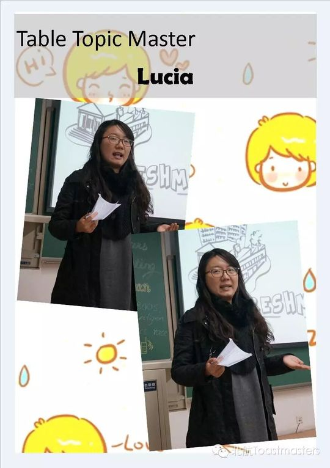
✓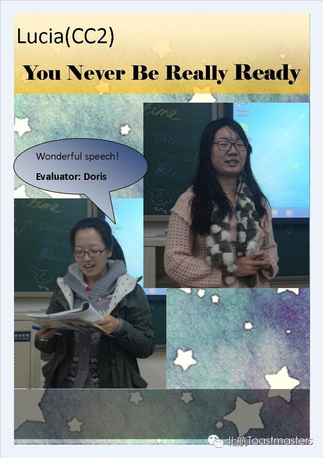
✓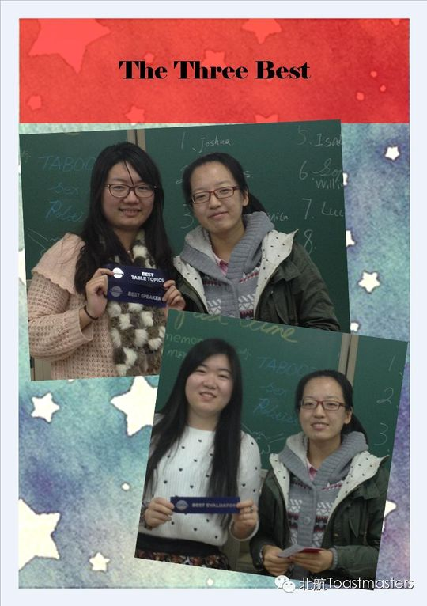
✓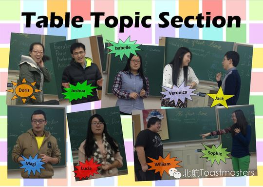
✓ ✓
✓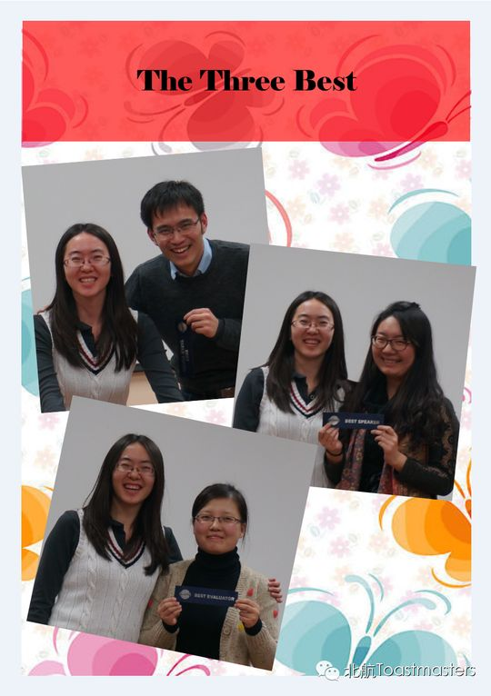
✓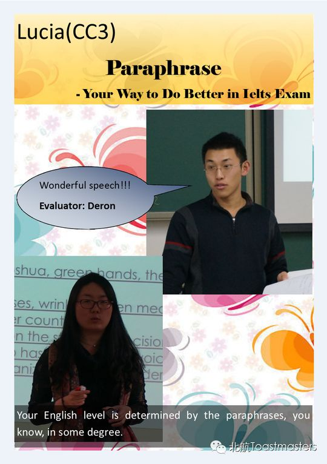
✓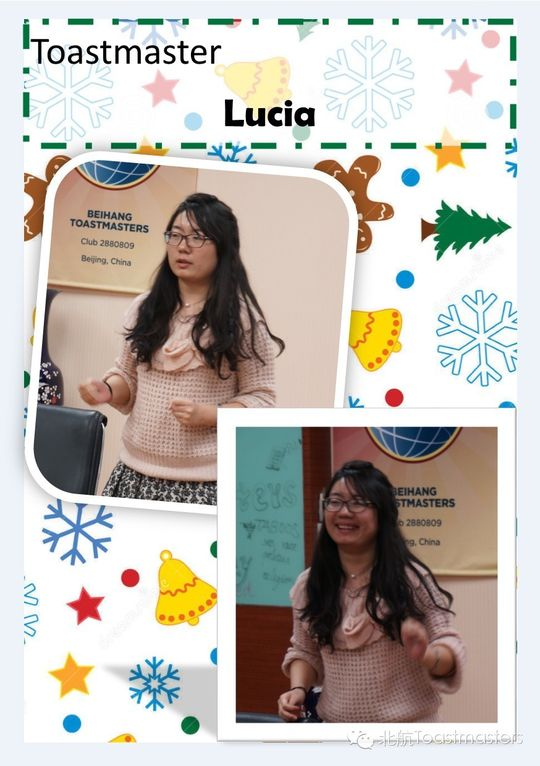
✓ ✓
✓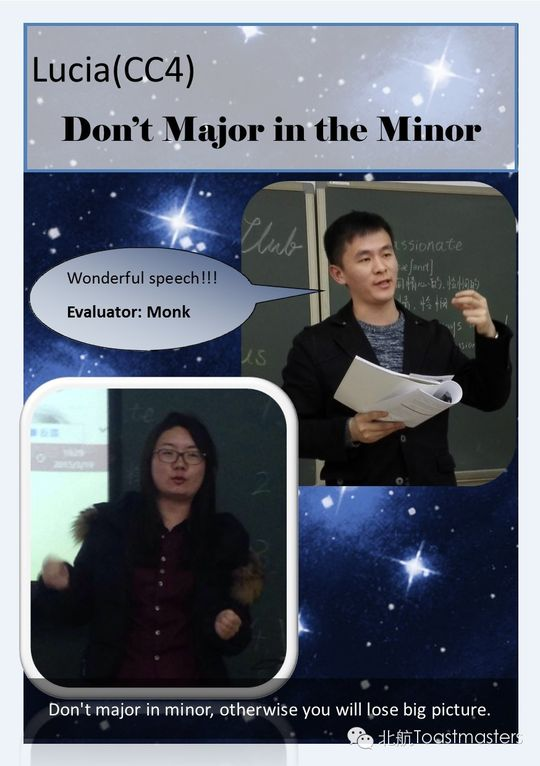
✓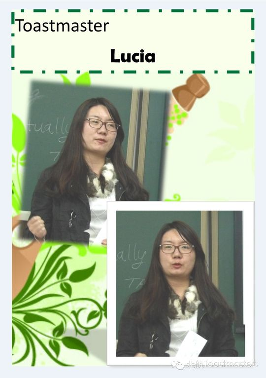
✓ ✓
✓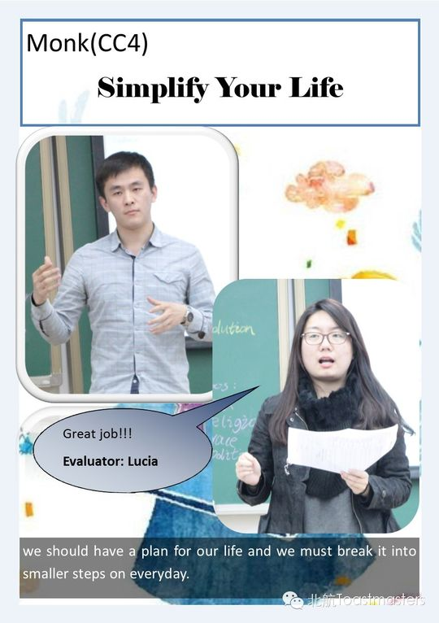
✓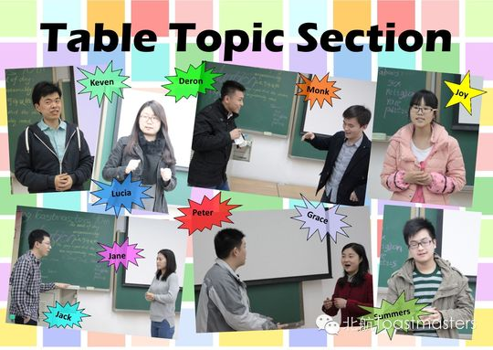
✓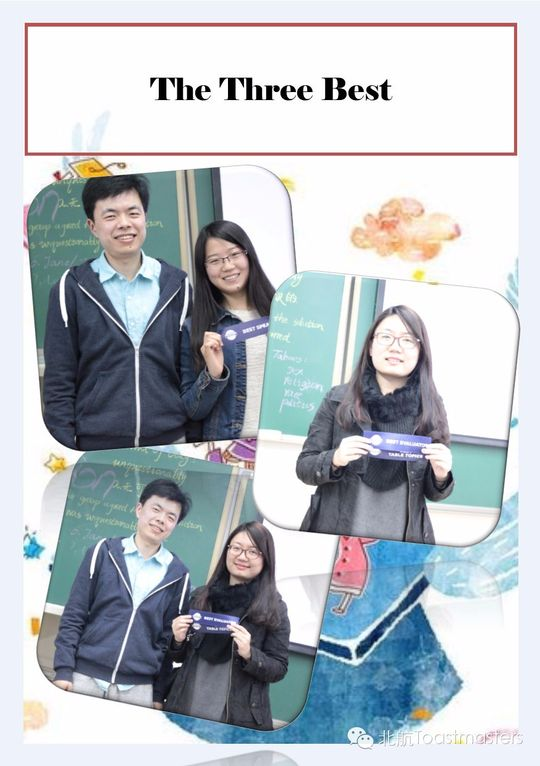
✓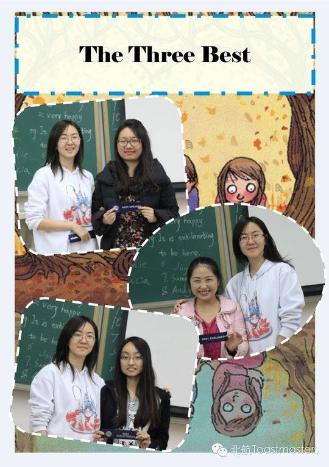
✓ ✓
✓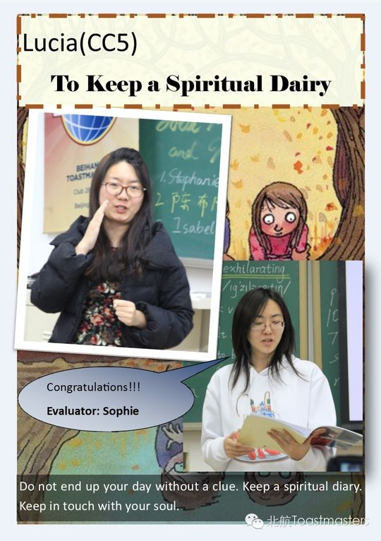
✓ ✓
✓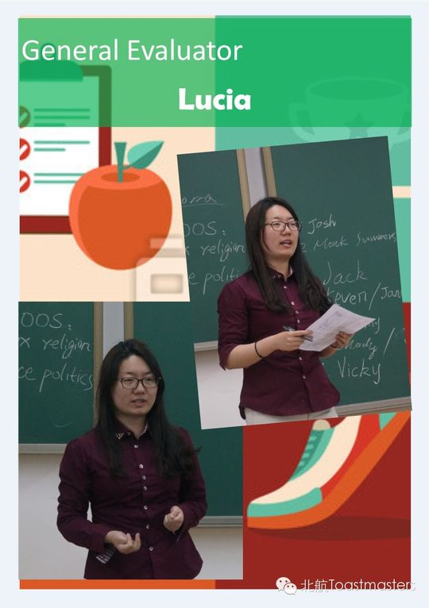
✓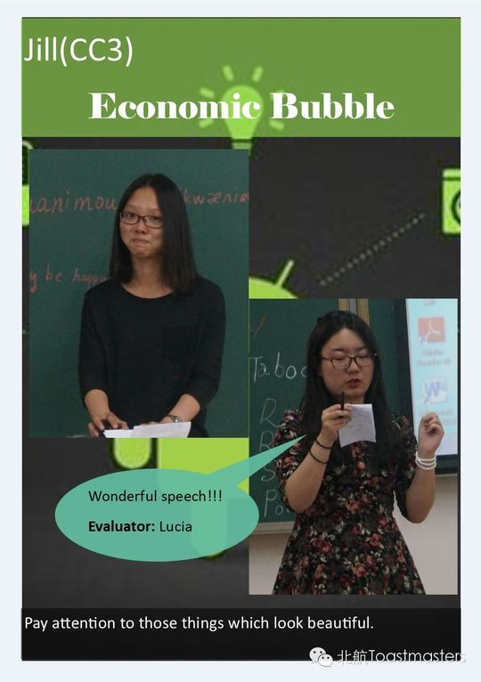
✓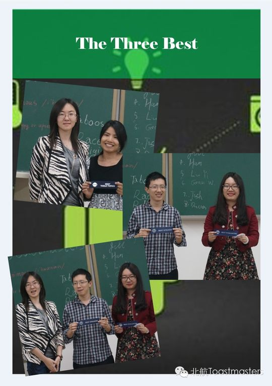
✓